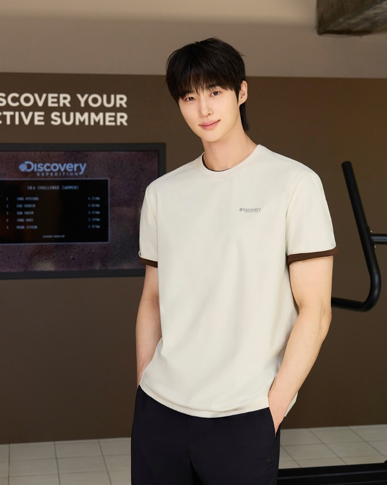

DISCOVER YOUR ACTIVE SUMMER
아웃도어는 있는데, 일상에 입을 문장이 없었다.
WHY
아웃도어는 있는데, 일상에 입을 문장이 없었다.
WHERE
성수 팝업 · SNS · 보도 · OOH
RESULT
착용 아이템 매출 2배 · 오가닉 SNS 800건
COPY · 같은 문장, 다른 길이
키메시지 「DISCOVER YOUR ACTIVE SUMMER」. 채널마다 길이와 문법만 바꿉니다.
SNS
Discover your active wellness with 변우석
DISCOVER YOUR ACTIVE SUMMER
속성 · 브랜드×인물 락업(공개 LinkedIn) · 시즌 슬로건(공개 행사명). IG 본문은 미공개라 추정 캡션은 넣지 않음.
보도자료 헤드라인
디스커버리 익스페디션, 변우석과 함께 ‘움직이는 일상’ 속 여름 러닝 스타일링 제시
속성 · 뉴스 문법 · 공개 보도(F&F 2026.05.04). SNS의 여름 슬로건을 기사에서는 ‘움직이는 일상’으로 번역.
OOH · 배너
DISCOVER YOUR ACTIVE SUMMER
속성 · 원거리 가독 · 공개 캠페인 벽면 카피. 얼굴이 카피고, 문장은 시즌 슬로건만 남김.
검색 키워드 = 카피
변우석 디스커버리 · 액티브 웰니스 · 프레시벤트
속성 · 인물 검색이 입구, 액티브 웰니스가 브랜드 문장. 프레시벤트는 공개 소재명. ‘변우석 디스커버리’는 검색 입구로 추정.
